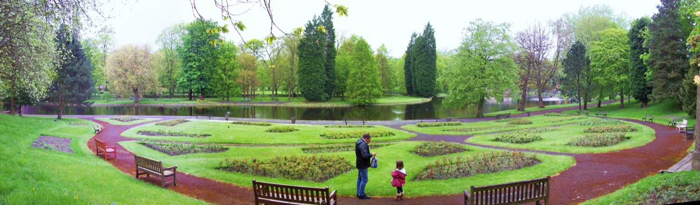

Towneley Hall and Park
Use Towneley for parkland, architecture and Burnley history. It works well after a travel day or before an evening in.
 The Bungalow Burnley
The Bungalow Burnley
Burnley halls and parks
Local heritage and easier days out for guests who want Burnley history without making every day a long drive.
Local days
Towneley Hall and its parkland are the obvious Burnley choice. Thompson Park works for a gentle stroll, and Gawthorpe Hall near Padiham adds a strong heritage stop when opening times line up.
Use Towneley for parkland, architecture and Burnley history. It works well after a travel day or before an evening in.

A softer local stop with water, paths and an easy pace. Good for fresh air without committing to a hill walk.

Close to Padiham, Gawthorpe adds a polished heritage day to a Burnley stay. Check opening before travelling.

If the day is clear, pair a hall or park with the Singing Ringing Tree for a short open-air stop.
Easy pairings
For a self-catering stay, these days work because they are easy to shape around breakfast, shopping, lunch and a quiet evening back at the bungalow.
Use the hall and parkland as the main plan, then add a short walk only if the day still feels easy.
A gentle park walk, then keep the rest of the day flexible for shopping, food or a quiet hour back at the bungalow.
Pair the heritage visit with a simple local stop rather than turning it into a long driving day.
Guest tip
If the morning is clear, do the viewpoint first. If it is wet, start with a hall, museum or cafe plan and keep the park for later.
Opening times, parking and access can change. Look up official attraction pages before setting off.
Next idea
Add one heritage day as well as the parks. Queen Street Mill and the canal make Burnley feel specific rather than just convenient.